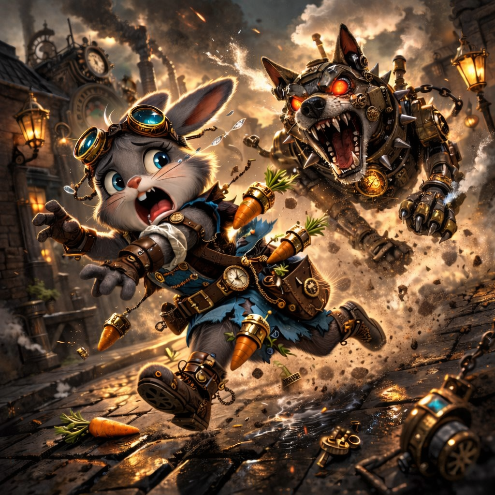
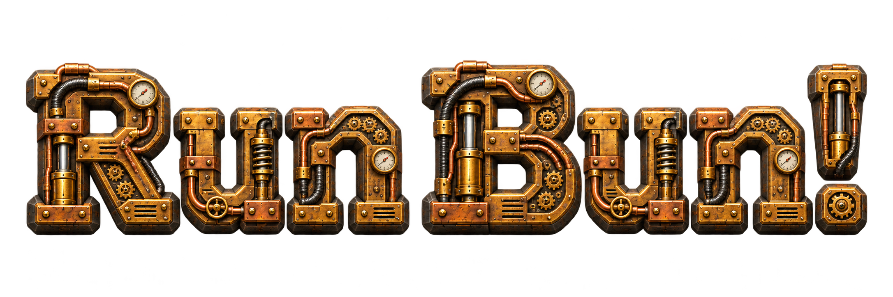

Cover


The War
The Buns
"For over 200 generations—that's almost 3 months—crazy, sneaky, evil dogs have been tricking and eating innocent little Buns while we just try to get away from the big, bad, demon dogs."
-This message has been approved by the Council of Bun Rights
The Dogs
"No, really, it's about stupid, meanie head Buns trying to starve poor puppy dogs out of existence."
-This ad has been paid fur by the Best Dog Auxiliary
The Swiss
Very sorry about that everyone but we are obliged to present both points of view in this simualtion of the ongoing Bun v. Dog Conflict. In fact, we think it's best that you run the sim and decide for yourselves which of these factions is really the correct one. To that end, we proudly present Run Bun! A perfectly graphically accurate and totally physically correct simulation of the Bun and Dog world.
🥕 The one-minute teach
3–8 players · 1 Dog · 2 Buns per Bun player · 3 days
A fast, loud steampunk Chase. Help a rival get away when the Dog is ahead. Send the Chase their way when they’re pulling ahead of you.
One player is the Dog. Everyone else starts with two Bun, called a Brace. Buns enter play face down; only their Brace’s owner may look at them. The Dog draws cards and plays Chase to pursue a Bun. Its player can react with Panic, then both sides roll a d20. If the Dog wins, it catches the Bun and chooses to eat or injure it. If the Bun wins, it escapes for the day.
Every Bun you get to safety keeps you in the action from the Burrow. Injured Buns sit out until Dawn. Once every Bun has escaped, been eaten, or been injured, Dusk falls and everyone scores. At Dawn, escaped and injured Buns return to their Braces, and fresh Buns take the places of any the Dog ate. Get the same Bun out again and its escape is worth even more.
After Day 3, add up the scores. The highest total wins. Whether you played the table to keep your Brace alive or timed your Chases to catch the Buns that mattered most, three days of sharp decisions earned you the win.
🃏 Card Types
| Side | Set | What it does |
|---|---|---|
| 🐇 Bun | Bun | Your Bun characters. |
| 🐇 Bun | Nice | Helps another player’s Bun. |
| 🐇 Bun | Nasty | Makes trouble for another player’s Bun. |
| 🐇 Bun | Panic | A Reaction you can play when one of your Buns is Startled. |
| 🐇 Bun | Prep | Gives you a head-start against the Dog. |
| 🐕 Dog | Dog | The Dog characters. |
| 🐕 Dog | Chase | Starts a Chase and can specify how it’s affected. |
| 🐕 Dog | Lure | Lets the Dog bait Buns. |
| 🐕 Dog | Sniff | Reveals Buns without catching them. |
| 🐕 Dog | Startle | TODO |
Four decks
Shuffled Before First Draw and Kept Face Down.
What You'll Need
- A d20. Share one die for opposed rolls and injury penalties.
- A score sheet and pencil to track daily scores and each Bun's escapes.
Setup
- Choose the Dog player. The lowest-scoring player from the previous game plays the Dog. If this is the first game, everyone rolls a d20. If players tied for the lowest score, only those players roll. The lowest roll gets the Dog. Reroll among players tied for the lowest roll until one player gets it. Everyone else plays as a Bun player.
- Establish turn order. Start with the Dog player and go clockwise around the table. Use this order for the starting hands and Bun draws.
- Shuffle and lay out the decks. Shuffle the Dog and Bun character decks separately and keep them face down within reach. Shuffle Chase, Lure, Sniff, and Startle together to make the Dog's Havoc draw pile. Shuffle Nice, Nasty, Panic, and Prep together to make the Buns' Survival draw pile. Place both draw piles face down and leave space for a separate discard pile beside each.
Start Playing
- Draw characters. The Dog player draws one card from the Dog character deck and places it face up in front of them. Then, in clockwise order from the Dog, each Bun player draws two Bun cards and places them face down in front of them. These two Buns form that player's Brace. Only that Brace’s owner may look at these face-down cards. Both start in play with no previous escapes.
- Draw starting hands. In turn order, each player draws their starting hand from their side's draw pile. The Dog draws 5 cards or one per Bun player, whichever is higher. Each Bun player draws 5 cards.
- Start Day 1. Begin with the first Dog turn. Keep a record of each day's scores and each Bun's escapes for later days.
Take a **Dog** Turn 🐕
Draw cards, make plays and resolve any Chases, then discard down to the current hand limits. Take another Dog turn if any Buns are still in play. Once all Buns are out of play for the day, score at Dusk.
Draw cards and check play allowances
The Dog draws one card per Bun player each turn. At a five-player table, the Dog draws four. The Dog’s maximum hand size is 5 or the number of Bun players, whichever is higher. Its Havoc deck mixes Chase, Lure, Sniff, and Startle cards, which count toward the same Dog play limit. The size of that play limit is still open.
A Bun player’s maximum hand size is 3 + 1 for each Bun in play or escaped. Each Bun’s status also sets how many cards its player draws and may play. A play requires an eligible card in hand.
| Bun status | Draws per Dog turn | Maximum plays per Dog turn |
|---|---|---|
| In play | 1 | Up to 1 regular play |
| Escaped | 1 | Up to 1 Burrow play |
| Injured | 0 | 0 plays |
| Eaten | 0 | 0 plays |
With two Buns in play, you may make up to two regular plays. With one in play and one escaped, you may make up to one regular play and up to one Burrow play. Once both escape, you may make up to two Burrow plays, using only the Burrow section of your cards. If the Dog Chases one of your Buns, you may play up to one Panic card for that Chase, separately from these plays.
Empty deck. When a deck runs out, shuffle its discard pile to make a new draw pile. Continue any remaining draws.
Hidden Buns
Buns enter play face down. Only their Brace’s owner may look at them. Being targeted by a Chase does not reveal a Bun. Reveal it when it is caught or when a revealing effect, such as a Sniff card, reveals it.
When a Dog card affects a hidden Bun, that Bun’s owner must honestly report whether the effect applies. Sniff cards reveal Buns and cannot catch them; catching requires a Chase.
🎲 Resolve a Chase
- Choose the target. The Dog plays a Chase card and picks an eligible Bun in play. A Bun can be chased only once per Dog turn. How Redirects count toward that limit is still open.
- React. The targeted Bun’s player can play one Panic card. Apply any legal modifiers before rolling. The Chase goes ahead even if the Bun player declines to react.
- Roll. The Dog makes its catch roll and the Bun makes its escape roll, each using a d20. Against a face-down Bun, the Dog takes −6 to its catch roll. Check Natural Rolls first. If neither side rolled a Natural 1 or Natural 20, compare the totals after the Bun’s printed Chase modifier, the face-down penalty to the Dog’s catch roll if applicable, and any card modifiers.
| Natural Rolls | Result |
|---|---|
| Both roll 1, or both roll 20 | Both reroll. |
| Dog rolls 20, or Bun rolls 1 | The Dog catches the Bun. |
| Bun rolls 20, or Dog rolls 1 | The Bun escapes. |
| Neither rolls a 1 or 20 | Higher Dog total means a catch. Higher Bun total means an escape. |
In a regular Chase, a Natural 20 earns +1 point and a Natural 1 costs 1 point for the side that rolled it. Apply both adjustments if both sides qualify. The Bun adjustment goes to the targeted Bun's player. Count only the roll that resolves the Chase. Record these points for Dusk in addition to the usual outcome scores.
Example: Against a revealed Bun, the Dog’s catch roll is 14. The Bun’s escape roll is 12 with a printed +3 Chase Modifier. The Bun’s total is 15, so it escapes immediately.
Buns stay in play until chased. Winning a Chase is enough to escape for the day. There are no Escape cards.
🐕 Eat or Injure
When the Dog catches a Bun, reveal that Bun and choose one.
- Eat it. Remove that Bun from the game permanently. The Dog earns +1, the Bun player loses 1 point, and the usual Brace bonuses apply.
- Injure it. The Bun is injured and sits out for the rest of the day. The Dog rolls a d20. A roll of 1–10 gives an injury multiplier of 1. A roll of 11–20 gives a multiplier of 2. Multiply (previous escapes + 1) by the injury multiplier and subtract that many points from the Bun’s player. Count only escapes by that same Bun on earlier days. The Dog scores no points for releasing it.
| Earlier escapes | Bun player | Dog |
|---|---|---|
| 0 | −1 or −2 | 0 |
| 1 | −2 or −4 | 0 |
| 2 | −3 or −6 | 0 |
An injured Bun cannot be chased again that day and gives its owner no Burrow play.
Finish the Dog turn
End the turn. After all plays and Chases for the full turn are finished, each player discards down to their current maximum hand size. Use each Bun’s status at the end of the turn to calculate its player’s limit.
🌇 Score at **Dusk**
Dusk falls when every Bun has escaped, been eaten, or been injured. Score each Brace separately, include any Natural Roll adjustments from its Chases, and record the result for that day.
| Outcome | Bun player | Dog |
|---|---|---|
| Bun escaped | +2, plus any repeat-escape bonus | 0 |
| Bun injured | −(previous escapes + 1) × injury multiplier | 0 |
| Bun eaten | −1 | +1 |
| Both Buns in the same Brace escaped that day | +1 extra | 0 |
| Both Buns in the same Brace were eaten that day | −1 extra | +1 extra |
A full Brace eaten scores −3 for its player and +3 for the Dog. The Dog earns the same catch points whether a Bun is fresh or has escaped before.
🐾 Repeat escapes
Each time a Bun escapes, add +1 for each earlier day that same Bun escaped.
| Escape by the same Bun | Points |
|---|---|
| First | 2 |
| Second | 3 |
| Third | 4 |
The daily +1 Brace bonus still applies. If the same two Buns escape on all three days, they score 5 + 7 + 9 = 21 points. A Bun that escaped on Day 1 and was injured on Day 2 gets 3 points if it escapes on Day 3. It has only one earlier escape.
🧮 Daily Brace score matrix
Read each row in either order. The scores include the daily Brace bonus or penalty. Add any Natural Roll adjustments separately. For each injured Bun, use its actual penalty from Eat or Injure.
| One Bun | Other Bun | Bun player | Dog |
|---|---|---|---|
| Escaped | Escaped | +5 to +9 | 0 |
| Escaped | Injured | +2 to +4, minus the injure penalty | 0 |
| Escaped | Eaten | +1 to +3 | +1 |
| Injured | Injured | Subtract both injure penalties | 0 |
| Injured | Eaten | −1, minus the injure penalty | +1 |
| Eaten | Eaten | −3 | +3 |
For example, if a Bun with one previous escape gets away and its partner is injured with a 2-point penalty, the Bun player scores 3 − 2 = 1 and the Dog scores 0.
🌅 Reset at **Dawn**
- Escaped: the same Bun returns to play and keeps its escape history.
- Injured: the same Bun returns to play and keeps its escape history.
- Eaten: that Bun is gone for the rest of the game. Fill its slot with a new Bun with no escape history.
For example, if one Bun escaped and its partner was eaten on Day 1, you start Day 2 with the Bun that escaped and one new Bun. Your Day 1 score stays recorded.
🏁 Who wins
Add each player’s scores from all three days. The highest score wins. Bun players tied for first share the win. If the Dog ties for first with one or more Bun players, settle it with Last Chase.
The Dog can score from any Brace. That gives Bun players a reason to cooperate when the Dog is ahead. A veteran Bun is also a tempting target for rivals. On Day 3, a Bun with two earlier escapes can score +4 by escaping or −1 if eaten, even before the Brace bonus. A Redirect can sabotage its owner or give them the escape they needed.
🎲 Last Chase
Each tied Bun player chooses one Bun from their Brace for a final opposed d20 roll against the Dog. Use that Bun’s printed Chase modifier and the usual Natural 1, Natural 20, and reroll rules. No cards are played. Natural Rolls settle the Chase outcome, and the final scores stay the same.
🔍 Still to decide
- Dog play limit and Dusk. Set the Dog’s shared play limit, when it must use a Chase, and how play continues if the Dog draws no Chase cards or temporarily has no eligible targets.
- Bun play timing. Set the windows for regular and Burrow plays, how an escape affects a play already spent that turn, and how to choose replacement Buns.
- Card effects and Redirects. Define individual cards, including how Lures and Redirects interact with Panic and the once-per-turn target limit. Check that hiding and Redirects cannot prevent the day from ending indefinitely.
The original notes preserve the earlier version.
Glossary
Brace
The pair of Buns belonging to one player.
Bun
Interchangeable terms for a character controlled by a Bun player.
Burrow
Catch Roll
Chase
A Dog card that starts a pursuit. The pursuit itself is called a Chase.
Chase Modifier
The value printed on a Bun card that adjusts its escape roll in a Chase.
Dawn
At Dusk, score the day.
Dog
The character that pursues the Buns, or the player controlling it.
Dusk
Last Chase
The roll-off that decides the winner when the Dog ties for first.
Lure
Nasty
Nasty cards make trouble for another player's Bun.
Natural Roll
The number showing on the die before modifiers.
Nice
Nice cards help another player's Bun.